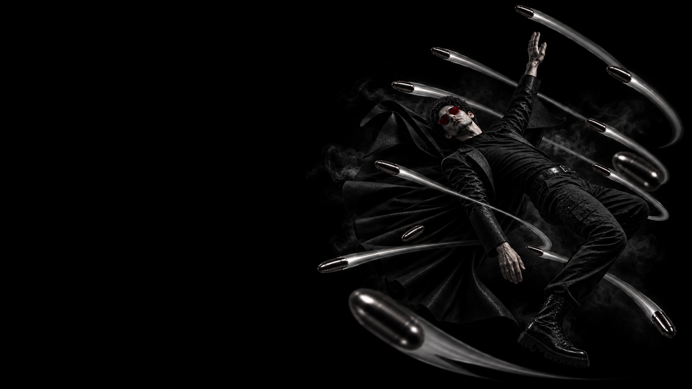

МИРНЫЕ · ЗАЩИТНАЯ
NEO
ВЫСТРЕЛ БЫЛ В НЕГО.
ЦЕЛЬЮ СТАЛ ДРУГОЙ.
Мирные
Активная · Защитная
Перенаправление — если ночью Мафия или Псих выбирают NEO своей целью, он просыпается и перенаправляет направленную на него атаку на любого другого игрока за столом.
NEO играет на стороне мирных и обладает практически абсолютной защитой ночью. Когда он становится целью Мафии или Психа, атака не срабатывает напрямую — NEO сам выбирает другого игрока, на которого она будет перенаправлена.
Ночью NEO практически невозможно убить. Исключение — если, спасая себя, он перенаправляет атаку на Дона Мафии: в этом случае погибает сам NEO, а Дон Мафии остаётся в игре. Днём NEO можно вывести из игры обычным голосованием.
Твоя неуязвимость — одновременно оружие и ловушка. Выбирай новую цель внимательно: одна ошибка может устранить союзника, а попытка направить удар на Дона будет стоить тебе собственной жизни.